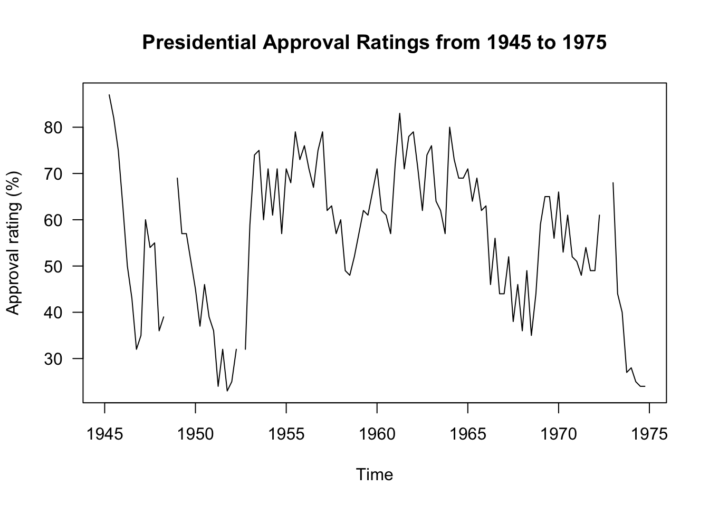

This portfolio piece began after coming across the data set, “presidents”. I was immediately drawn into the name of the data set and wanted to know more. The data set includes quarterly approval ratings from the years 1945 until 1975. For each year, there are four values associated with a quarterly approval rating, culminating in 120 total values, four for each of the thirty years.
The goal of this portfolio piece is to create a data visualization that depicts the change in presidential approval ratings from 1945 to 1975. This visualization will provide a foundation for this portfolio as it begins with curiosity and historical trends in American politics.
Firstly, I want to produce a printed version of our data set that allows me to easily view the layout of the data set. To do so, I printed the data values.
## Qtr1 Qtr2 Qtr3 Qtr4
## 1945 NA 87 82 75
## 1946 63 50 43 32
## 1947 35 60 54 55
## 1948 36 39 NA NA
## 1949 69 57 57 51
## 1950 45 37 46 39
## 1951 36 24 32 23
## 1952 25 32 NA 32
## 1953 59 74 75 60
## 1954 71 61 71 57
## 1955 71 68 79 73
## 1956 76 71 67 75
## 1957 79 62 63 57
## 1958 60 49 48 52
## 1959 57 62 61 66
## 1960 71 62 61 57
## 1961 72 83 71 78
## 1962 79 71 62 74
## 1963 76 64 62 57
## 1964 80 73 69 69
## 1965 71 64 69 62
## 1966 63 46 56 44
## 1967 44 52 38 46
## 1968 36 49 35 44
## 1969 59 65 65 56
## 1970 66 53 61 52
## 1971 51 48 54 49
## 1972 49 61 NA NA
## 1973 68 44 40 27
## 1974 28 25 24 24With the presidents data more clearly outlined above. I can now make sense of the values and their associated year and quarter. Each value corresponds to an approval rating of the current president during the year that the data was collected. This value reads as a percentage. For example, during Q2 in 1950, the presidential approval rating was 37%. During 1950, Harry S. Truman was president.
Additionally, I learned that there are “NA” values in the place of some values. This must mean that this quarter’s data was unavailable for the respective year. For example, there is no quarterly approval rating listed for Q1 in 1945. Further research is required to investigate the reasons for this but the majority of values are intact for the goal of this portfolio piece.
As the goal of this portfolio is to provide a clear visual representation of presidential approval ratings from 1945 to 1975, the product in this portfolio piece is a line graph. This line graph will graph the values as outlined in the data section so that trajectories and patterns can be collected from the data. Below is the product presenting data from the “presidents” data set with approval ratings (as percentages) plotted over the thirty year period.
plot(presidents, las = 1, ylab = "Approval rating (%)",
main = "Presidential Approval Ratings from 1945 to 1975")
The data shows us that with every presidential term, there are increases and decreases that ebb and flow with current events and political climates. This graph also shows us that presidential approval ratings were highest between 1953 and 1966. This can be interpreted by considering the United States political context of the time.
In 1953, Dwight D. Eisenhower took office for two full terms. His presidential period was well remembered and he received relatively high approval ratings following the Korean War and the Truman administration. Following Eisenhower, John F Kennedy took office in 1960 and remains one of the most well-liked presidents of all time. With approval ratings high, Lyndon B. Johnson carried on the momentum following his swift inauguration during the national crisis of the presidential assassination.
As we begin to see approval ratings dipping throughout the Johnson administration, values continued to decrease until the inauguration of Richard Nixon in 1969. From there, approval ratings started high and decreased with the Watergate scandal.
Lastly, it is interesting to note that many quarters where a president was just elected, are relatively higher than the quarters of presidents who have been in office for longer periods of time. This idea is associated with the “honeymoon” effect as presidents receive high approval ratings when first inaugurated but eventually begin to lose traction as their term goes on.